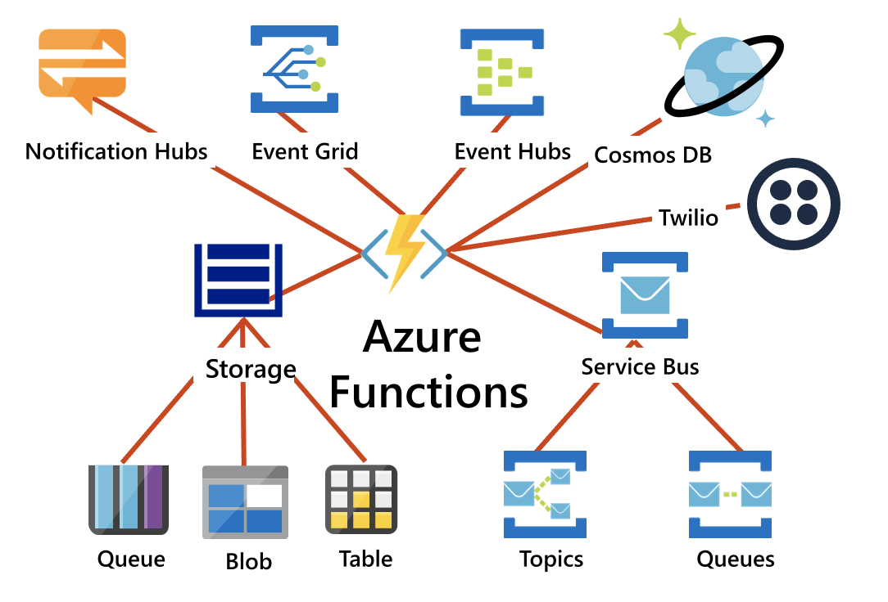
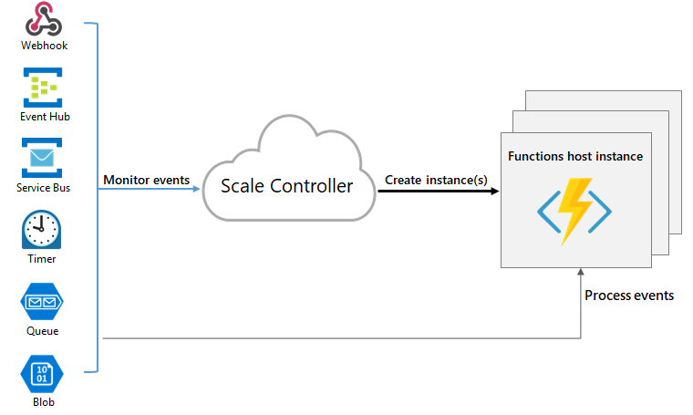

Azure Functions
Azure Functions are a great solution for processing data, integrating systems, working with the internet-of-things (IoT), and building simple APIs and microservices. Consider Functions for tasks like image or order processing, file maintenance, or for any tasks that you want to run on a schedule. Functions provides templates to get you started with key scenarios.
Azure Functions supports triggers, which are ways to start execution of your code, and bindings, which are ways to simplify coding for input and output data. There are other integration and automation services in Azure and they all can solve integration problems and automate business processes. They can all define input, actions, conditions, and output.
Integration
Azure Functions integrates with various Azure and third-party services. These services can trigger your function and start execution, or they can serve as input and output for your code.
The following service integrations are supported by Azure Functions:
- Azure Cosmos DB
- Azure Event Hubs
- Azure Event Grid
- Azure Notification Hubs
- Azure Service Bus (queues and topics)
- Azure Storage (blob, queues, and tables)
- On-premises (using Service Bus)
- Twilio (SMS messages)

Compare Azure Functions and Azure Logic Apps
Both Functions and Logic Apps enable serverless workloads. Azure Functions is a serverless compute service, whereas Azure Logic Apps provides serverless workflows. Both can create complex orchestrations. An orchestration is a collection of functions or steps, called actions in Logic Apps, that are executed to accomplish a complex task.
For Azure Functions, you develop orchestrations by writing code and using the Durable Functions extension. For Logic Apps, you create orchestrations by using a GUI or editing configuration files.
You can mix and match services when you build an orchestration, calling functions from logic apps and calling logic apps from functions. The following table lists some of the key differences between these:
| Azure Functions | Logic Apps | |
|---|---|---|
| Development | Code-first (imperative) | Designer-first (declarative) |
| Connectivity | About a dozen built-in binding types, write code for custom bindings | Large collection of connectors, Enterprise Integration Pack for B2B scenarios, build custom connectors |
| Actions | Each activity is an Azure function; write code for activity functions | Large collection of ready-made actions |
| Monitoring | Azure Application Insights | Azure portal, Azure Monitor logs |
| Management | REST API, Visual Studio | Azure portal, REST API, PowerShell, Visual Studio |
| Execution context | Can run locally or in the cloud | Supports run-anywhere scenarios |
Compare Functions and WebJobs
Like Azure Functions, Azure App Service WebJobs with the WebJobs SDK is a code-first integration service that is designed for developers. Both are built on Azure App Service and support features such as source control integration, authentication, and monitoring with Application Insights integration.
Azure Functions is built on the WebJobs SDK, so it shares many of the same event triggers and connections to other Azure services. Here are some factors to consider when you're choosing between Azure Functions and WebJobs with the WebJobs SDK:
| Functions | WebJobs with WebJobs SDK | |
|---|---|---|
| Serverless app model with automatic scaling | Yes | No |
| Develop and test in browserConnectivity | Yes | No |
| Pay-per-use pricing | Yes | No |
| Integration with Logic Apps | Yes | No |
| Trigger events | Timer, Azure Storage queues and blobs, Azure Service Bus queues and topics, Azure Cosmos DB, Azure Event Hubs, HTTP/WebHook (GitHub Slack), Azure Event Grid | Timer, Azure Storage queues and blobs, Azure Service Bus queues and topics , Azure Cosmos DB, Azure Event Hubs, File system |
Azure Functions offers more developer productivity than Azure App Service WebJobs does. It also offers more options for programming languages, development environments, Azure service integration, and pricing. For most scenarios, it's the best choice.
Compare Azure Functions hosting options
When you create a function app in Azure, you must choose a hosting plan for your app. There are three basic hosting plans available for Azure Functions: Consumption plan, Functions Premium plan, and App service (Dedicated) plan. All hosting plans are generally available (GA) on both Linux and Windows virtual machines.
The hosting plan you choose dictates the following behaviors:
- How your function app is scaled.
- The resources available to each function app instance.
- Support for advanced functionality, such as Azure Virtual Network connectivity.
The following is a summary of the benefits of the three main hosting plans for Functions:
| Plan | Benefits |
|---|---|
| Consumption plan | This is the default hosting plan. It scales automatically and you only pay for compute resources when your functions are running. Instances of the Functions host are dynamically added and removed based on the number of incoming events. |
| Premium plan | Automatically scales based on demand using pre-warmed workers, which run applications with no delay after being idle, runs on more powerful instances, and connects to virtual networks. |
| Dedicated plan | Run your functions within an App Service plan at regular App Service plan rates. Best for long-running scenarios where Durable Functions can't be used. |
There are two other hosting options, which provide the highest amount of control and isolation in which to run your function apps.
| Hosting option | Details |
|---|---|
| ASE | App Service Environment (ASE) is an App Service feature that provides a fully isolated and dedicated environment for securely running App Service apps at high scale. |
| Kubernetes | Kubernetes provides a fully isolated and dedicated environment running on top of the Kubernetes platform. For more information visit Azure Functions on Kubernetes with KEDA. |
Always on
If you run on a Dedicated plan, you should enable the Always on setting so that your function app runs correctly. On an App Service plan, the functions runtime goes idle after a few minutes of inactivity, so only HTTP triggers will "wake up" your functions. Always on is available only on an App Service plan. On a Consumption plan, the platform activates function apps automatically.
Storage account requirements
On any plan, a function app requires a general Azure Storage account, which supports Azure Blob, Queue, Files, and Table storage. This is because Functions rely on Azure Storage for operations such as managing triggers and logging function executions, but some storage accounts don't support queues and tables. These accounts, which include blob-only storage accounts (including premium storage) and general-purpose storage accounts with zone-redundant storage replication, are filtered-out from your existing Storage Account selections when you create a function app.
The same storage account used by your function app can also be used by your triggers and bindings to store your application data. However, for storage-intensive operations, you should use a separate storage account.
Scale Azure Functions
In the Consumption and Premium plans, Azure Functions scales CPU and memory resources by adding additional instances of the Functions host. The number of instances is determined on the number of events that trigger a function.
Each instance of the Functions host in the Consumption plan is limited to 1.5 GB of memory and one CPU. An instance of the host is the entire function app, meaning all functions within a function app share resource within an instance and scale at the same time. Function apps that share the same Consumption plan scale independently. In the Premium plan, the plan size determines the available memory and CPU for all apps in that plan on that instance.
Function code files are stored on Azure Files shares on the function's main storage account. When you delete the main storage account of the function app, the function code files are deleted and cannot be recovered.
Runtime scaling
Azure Functions uses a component called the scale controller to monitor the rate of events and determine whether to scale out or scale in. The scale controller uses heuristics for each trigger type. For example, when you're using an Azure Queue storage trigger, it scales based on the queue length and the age of the oldest queue message.
The unit of scale for Azure Functions is the function app. When the function app is scaled out, additional resources are allocated to run multiple instances of the Azure Functions host. Conversely, as compute demand is reduced, the scale controller removes function host instances. The number of instances is eventually "scaled in" to zero when no functions are running within a function app.

Note: After your function app has been idle for a number of minutes, the platform may scale the number of instances on which your app runs in to zero. The next request has the added latency of scaling from zero to one. This latency is referred to as a cold start.
Scaling behaviors
Scaling can vary on a number of factors, and scale differently based on the trigger and language selected. There are a few intricacies of scaling behaviors to be aware of:
- Maximum instances: A single function app only scales out to a maximum of 200 instances. A single instance may process more than one message or request at a time though, so there isn't a set limit on number of concurrent executions.
New instance rate: For HTTP triggers, new instances are allocated, at most, once per second. For non-HTTP triggers, new instances are allocated, at most, once every 30 seconds.
Limit scale out
You may wish to restrict the maximum number of instances an app used to scale out. This is most common for cases where a downstream component like a database has limited throughput. By default, Consumption plan functions scale out to as many as 200 instances, and Premium plan functions will scale out to as many as 100 instances. You can specify a lower maximum for a specific app by modifying the
functionAppScaleLimitvalue. ThefunctionAppScaleLimitcan be set to0ornullfor unrestricted, or a valid value between1and the app maximum.Azure Functions scaling in an App service plan
Using an App Service plan, you can manually scale out by adding more VM instances. You can also enable autoscale, though autoscale will be slower than the elastic scale of the Premium plan.